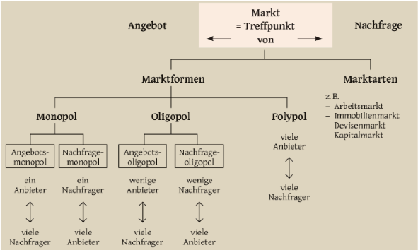

Speiseeismarkt: Realität vs. Modell
Die Eisauktion simuliert einen idealtypischen Markt. In der Realität weicht der Speiseeismarkt an wichtigen Stellen ab. Genau diese Abweichungen erklären, warum eine Kugel Eis nicht immer gleich viel kostet.
Worum geht’s in dieser Theorie-Seite?
Merksatz
Preise sind nicht nur „Zahlenspiele“, sondern hängen davon ab, wie organisiert ein Markt ist, wie stark sich Anbieter/Nachfrager räumlich und saisonal unterscheiden und ob Produkte wirklich vergleichbar sind.
In der Eisauktion tun wir so, als wäre „Eis“ ein homogenes Gut. In echt spielen Qualität, Image, Standort und Saison eine große Rolle – und verändern Angebot, Nachfrage und damit den Preis.
1) Geringer Organisationsgrad
Der Speiseeismarkt ist nicht überall gleich „geordnet“. Häufig gibt es viele kleine, selbständige Anbieter (Eisdielen), aber auch große Ketten, Supermärkte und Discounter. Dazu kommt: Vorprodukte (Milch, Zucker, Energie, Personal) müssen beschafft werden und schwanken im Preis.
Was heißt das für Preise?
- Viele kleine Anbieter → unterschiedliche Kostenstrukturen
- Beschaffung & Energie → Kosten können schnell steigen
- Wenig zentrale „Preissteuerung“ → Preise sind regional sehr unterschiedlich
Bezug zur Eisauktion
- Unternehmen: Eure Kosten (Fix/variabel) sind euer „Kernhebel“.
- Käufer: Vergleicht Anbieterpreise und beobachtet, wie schnell sie reagieren.
- Auswertung: Prüft, ob sich „effiziente“ Anbieter durchsetzen.
2) Räumliche und saisonale Unterschiede
Anbieter und Nachfrager sind räumlich verteilt: City-Lagen (z. B. Berlin/München) haben oft höhere Mieten und Löhne, was höhere Preise begünstigt. Gleichzeitig gibt es günstigere Alternativen im Supermarkt/Discounter. Saison spielt ebenfalls eine große Rolle: Sommer = Hochsaison → hohe Nachfrage.
Beispiele
- City-Lage: höherer Preis wegen hoher Fixkosten (Miete, Personal)
- Discounter: günstiger durch Masse/Skaleneffekte
- Sommer: Nachfrage hoch → Preis-/Mengenreaktionen wahrscheinlicher
Wenn du als Lehrkraft später „Saison“ simulieren willst, gib den Käufern in bestimmten Runden mehr Budget (höhere Nachfrage) oder ändere die Produktionsgrenzen/Kosten (z. B. „Energiepreis-Schock“).
3) Qualität und Image
In der Realität ist „Vanilleeis“ nicht gleich „Vanilleeis“: Zutaten, Rezept, Konsistenz, Herstellung, aber auch Marken-Image und Laden-Erlebnis beeinflussen die Zahlungsbereitschaft. Damit ist das Gut nicht vollständig homogen.
Warum steigen Preise dann?
- Höhere Qualität → höhere Kosten, aber auch höhere Zahlungsbereitschaft
- Image/Marke → Käufer akzeptieren höhere Preise
- Weniger Vergleichbarkeit → geringerer Preisdruck
Bezug zur Eisauktion
- Im Spiel ist Eis „gleich“ → starker Wettbewerb über den Preis.
- In echt ist Eis oft „differenziert“ → Preisspannen sind normal.
- Diskussion: Was müsste man ändern, um Qualität/Marke zu simulieren?
Marktformen: Wo liegt der Speiseeismarkt?
Die Grafik ordnet Märkte nach Anzahl von Anbietern/Nachfragern ein. Der Speiseeismarkt wirkt oft wie ein Polypol (viele Anbieter, viele Nachfrager) – aber durch Standort, Marke und Sortiment entstehen lokal auch „monopolähnliche“ Situationen.

Quelle: Helmut Nudung / Josef Haller, Wirtschaftskunde, Klett: Stuttgart, S. 218.
Mini-Aufgabe (für eure Auswertung)
- Welche Bedingungen der „absoluten Konkurrenz“ erfüllt die Eisauktion gut?
- Welche 3 Realitätsfaktoren (Organisation, Raum/Saison, Qualität/Image) stören das Modell am stärksten?
- Wie würdet ihr die Simulation erweitern, um einen dieser Faktoren abzubilden?
Literaturhinweis:
Vgl. N. Gregory Mankiw, Grundzüge der Volkswirtschaftslehre,
übersetzt von Adolf Wagner und Marco Herrmann,
Schäffer-Poeschel: Stuttgart 2004, S. 67f.